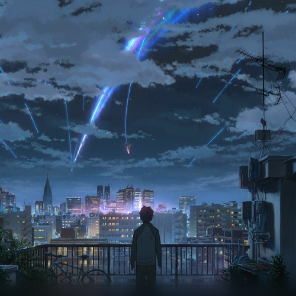

You are my star.
E-English is your world.
In the town of Luminara, every house had a lantern that glowed softly at night. But one evening, a mysterious lantern appeared in the town square. It wasn't like any other — its light was golden and flickered as if alive. The villagers whispered that the lantern could turn dreams into reality, but no one dared touch it… except for a young girl named Mira. Mira had always dreamed of seeing the world beyond Luminara, and her curiosity led her to the lantern. As she reached out, the lantern floated into her hands and whispered, “Follow your heart.” Suddenly, Mira found herself standing in a vast field filled with floating islands, sparkling rivers, and forests where trees sang melodies. Every night, Mira returned to the magical world, learning about courage, friendship, and the power of believing in oneself. She met talking animals, wise guardians, and even a young boy who shared her adventures. But one night, the lantern dimmed, and a voice said, “The real magic is not in the lantern, but in you.” Mira returned home, realizing that her dreams weren't just in faraway lands — they were inside her. She began helping others in Luminara pursue their own dreams, sharing the magic she had discovered. And though the lantern eventually vanished, its light lived on in every hopeful heart.
